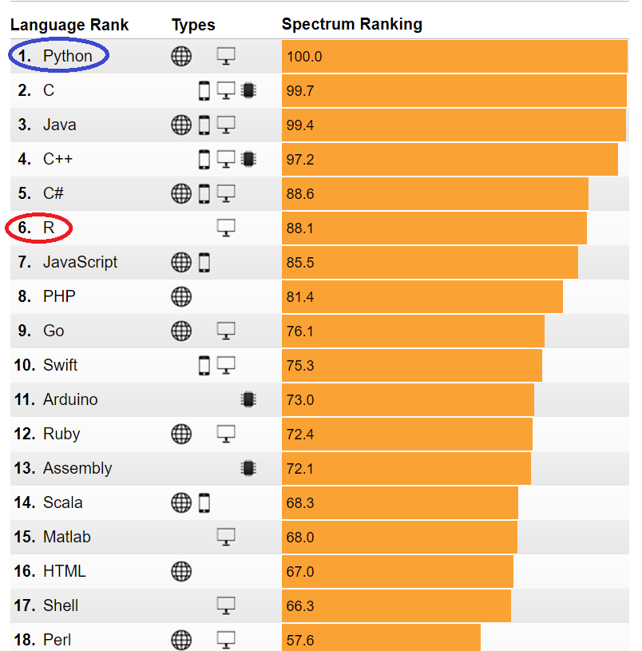

CHAPTER 2 INTRODUCTION TO R AND RStudio pp. 31 – 65
(2.1) R SOFTWARE p. 32
(2.2) R vs. PYTHON p. 38
(2.3) RStudio p. 39
Homework #1 Due Tue 6 Feb
INTRODUCTION TO R AND RStudio
R SOFTWARE
We now turn our attention to the software that we will use in this class throughout the semester. The open source software we will be using is called R and details about it can be found at CRAN (https://cran.r-project.org/ ), and it works with Windows, Mac, and Linux operating systems. R has its origins in the S programming language created in the 1970’s, and was originally intended to simply be an interactive interface to well-used Fortran routines at Bell Labs. R was created as an open-source alternative in the 1990s. Since then R has been used by scientists, statisticians and more recently, data scientists as a convenient environment for interactive exploratory data analysis (https://www.simple-talk.com/dotnet/software-tools/r-basics/ 2/20/17).
R was also developed as a language that focused on delivering a better and more user-friendly way to do data analysis, statistics and graphical models. At first, R was primarily used in academics and research, but lately the enterprise world is discovering R as well. This makes R one of the fastest growing statistical languages in the corporate world. Since it was designed as an interface language it presents a consistent language interface for algorithms written in other languages. Many packages work by providing R language bindings to other open-source software, making R a convenient hub for all kinds of algorithms and methods (http://blog.revolutionanalytics.com/2017/01/cran-10000.html 2/20/17).
One of the main strengths of R is its huge user and development community that provides support through mailing lists, user-contributed documentation and a very active Stack Overflow group. The CRAN web site also holds a huge repository of curated R packages to which users can easily contribute. These packages are a collection of R functions and data that make it easy to immediately get access to the latest statistical techniques and functionalities without needing to develop everything from scratch yourself (http://www.kdnuggets.com/2015/05/r-vs-python-data-science.html 2/20/17). The CRAN system itself is a very effective platform for sharing R extensions, with a mature system for package authoring, building, testing, and distribution. The R core team and in particular the CRAN maintainers deserve significant credit for creating a vibrant ecosystem for R packages (http://blog.revolutionanalytics.com/2017/01/cran-10000.html 2/20/17).
In Jan 2017, the CRAN web site added R’s 10,000 package and the number continues to grow as of 8/13/17 the total number of packages is 11,221 (https://cran.r-project.org/web/packages/ ). One can observe the rate of growth of R packages in the figure below from http://blog.revolutionanalytics.com/2017/01/cran-10000.html 2/20/17.
Using data from LinkedIn in 2015 researchers determined the top 20 skills of a data scientist and the results are in the figure below (http://www.smartdatacollective.com/top-20-data-science-skills/ 8/13/17). Note the second entry is the software language R, followed by the Python programming language.
Another indicator of the role R is playing in today’s world comes from the TIOBE Index for January 2018 (https://www.tiobe.com/tiobe-index/ 1/07/18). “The TIOBE Programming Community index is an indicator of the popularity of programming languages. The index is updated once a month. The ratings are based on the number of skilled engineers world-wide, courses and third party vendors. Popular search engines such as Google, Bing, Yahoo!, Wikipedia, Amazon, YouTube and Baidu are used to calculate the ratings. It is important to note that the TIOBE index is not about the best programming language or the language in which most lines of code have been written.” Note that R has risen 8 positions in one year to 8th, while Python has risen 1 position.
|
Jan 18 2018 |
Jan 17 |
Change |
Programming Language |
Ratings |
Change |
|
1 |
1 |
|
Java |
14.215% |
-3.06% |
|
2 |
2 |
|
C |
11.037% |
+1.69% |
|
3 |
3 |
|
C++ |
5.603% |
-0.70% |
|
4 |
5 |
|
Python |
4.678% |
+1.21% |
|
5 |
4 |
C# |
3.754% |
-0.29% |
|
|
6 |
7 |
|
JavaScript |
3.465% |
+0.62% |
|
7 |
6 |
Visual Basic .NET |
3.261% |
+0.30% |
|
|
8 |
16 |
R |
2.549% |
+0.76% |
|
|
9 |
10 |
|
PHP |
2.532% |
-0.03% |
|
10 |
8 |
Perl |
2.419% |
-0.33% |
|
|
11 |
12 |
|
Ruby |
2.406% |
-0.14% |
|
12 |
14 |
|
Swift |
2.377% |
+0.45% |
|
13 |
11 |
Delphi/Object Pascal |
2.377% |
-0.18% |
|
|
14 |
15 |
|
Visual Basic |
2.314% |
+0.40% |
|
15 |
9 |
|
Assembly language |
2.056% |
-0.65% |
|
16 |
18 |
|
Objective-C |
1.860% |
+0.24% |
|
17 |
23 |
Scratch |
1.740% |
+0.58% |
|
|
18 |
19 |
|
MATLAB |
1.653% |
+0.07% |
|
19 |
13 |
|
Go |
1.569% |
-0.76% |
|
20 |
20 |
|
PL/SQL |
1.429% |
-0.11% |
We also observe programming language ratings from RedMonk (June 2017). These ratings are obtained by comparing the performance of programming languages relative to one another on GitHub and Stack Overflow twice a year. The idea is not to offer a statistically valid representation of current usage, but rather to correlate language discussion (Stack Overflow) and usage (GitHub) in an effort to extract insights into potential future adoption trends. Historically, the correlation between how a language ranks on GitHub versus its ranking on Stack Overflow has been strong (in this case 0.77). No claims are made here that these rankings are representative of general usage more broadly. They are nothing more or less than an examination of the correlation between two populations we believe to be predictive of future use, hence their value. Out of the last 10 of the top 20 languages, R has shown the most consistent upwards movement over time. From its position of 17 back in 2012, it has made steady gains over time (http://redmonk.com/sogrady/2017/06/08/language-rankings-6-17/ 8/13/17).
The ordered rankings from the above figure are:
1
JavaScript
2
Java
3
Python
4
PHP
5
C#
6
C++
7
CSS
8
Ruby
9
C
10
Objective-C
11
Swift
12
Shell
12
Scala
14
R
15
Go
15
Perl
17
TypeScript
18
PowerShell
19
Haskell
20
CoffeeScript
20
Lua
20
Matlab
One more language ranking from the IEEE organization (http://spectrum.ieee.org/static/interactive-the-top-programming-languages-2017 8/13/17) where the ranking is calculated using 12 weighted data sources such as Google search, GitHub, StackOverflow, Reddit, Career Builder, Twitter, Hacker News, Dice, and IEEE Explore. The 4 language type symbols are as follows:

R vs. PYTHON
This leads us to a discussion of R vs Python – which is an ongoing debate within the data science community. We discussed on the origins of R previously and now we consider Python. The following discussion was taken from http://www.kdnuggets.com/2015/05/r-vs-python-data-science.html 2/20/17.
Python was created by Guido Van Rossem in 1991 and emphasizes productivity and code readability. Programmers that want to delve into data analysis or apply statistical techniques are some of the main users of Python for statistical purposes. The closer you get to working in an engineering environment, the more likely it is you might prefer Python. It’s a flexible language that is great to do something novel, and given its focus on readability and simplicity, its learning curve is relatively low. Similar to R, Python has packages as well. PyPi is the Python Package index and consists of libraries to which users can contribute. Just like R, Python has a great community but it is a bit more scattered, since it’s a general purpose language. Nevertheless, Python for data science is rapidly claiming a more dominant position in the Python universe: the expectations are growing and more innovative data science applications will see their origin here.
On the web, you can find many numbers comparing the adoption and popularity of R and Python. While these figures often give a good indication on how these two languages are evolving in the overall ecosystem of computer science, it’s hard to compare them side-by-side. The main reason for this is that you will find R only in a data science environment as a general purpose language, Python, on the other hand, is widely used in many fields, such as web development. This often biases the ranking results in favor of Python.
R is mainly used when the data analysis task requires standalone computing or analysis on individual servers. It’s great for exploratory work, and it's handy for almost any type of data analysis because of the huge number of packages and readily usable tests that often provide you with the necessary tools to get up and running quickly. R can even be part of a big data solution.
You can use Python when your data analysis tasks need to be integrated with web apps or if statistics code needs to be incorporated into a production database. Being a fully-fledged programming language, it’s a great tool to implement algorithms for production use. While the infancy of Python packages for data analysis was an issue in the past, this has improved significantly over the years. Make sure to install NumPy /SciPy (scientific computing) and pandas (data manipulation) to make Python usable for data analysis. Also have a look at matplotlib to make graphics, and scikit-learn for machine learning.
There are signals that more people are switching from R to Python. Furthermore, there is a growing group of individuals using a combination of both languages when appropriate. This is exactly in line with what we recommend to our students as well. If you’re planning to start a career in data science, you are good with both languages. Job trends indicated an increasing demand for both skills, and wages are well above average.
R: Pros and Cons
Visualized data can often be understood more efficiently and effectively than the raw numbers alone. R and visualization are a perfect match. Some must-see visualization packages are ggplot2, ggvis, googleVis and rCharts.
R has a rich ecosystem of cutting-edge packages and active community. Packages are available at CRAN, BioConductor and GitHub. You can search through all R packages at Rdocumentation.
R is developed by statisticians for statisticians. They can communicate ideas and concepts through R code and packages, you don’t necessarily need a computer science background to get started. Furthermore, it is increasingly adopted outside of academia.
R was developed to make the life of statisticians easier, not the life of your computer. Although R can be experienced as slow due to poorly written code, there are multiple packages to improve R’s performance: pqR, renjin and FastR, Riposte and many more.
R’s learning curve is non-trivial, especially if you come from a GUI for your statistical analysis. Even finding packages can be time consuming if you’re not familiar with it.
Python: Pros and Cons
The IPython Notebook makes it easier to work with Python and data. You can easily share notebooks with colleagues, without having them to install anything. This drastically reduces the overhead of organizing code, output and notes files. This will allow you to spend more time doing real work.
Python is a general purpose language that is easy and intuitive. This gives it a relatively flat learning curve, and it increases the speed at which you can write a program. In short, you need less time to code and you have more time to play around with it! Furthermore, the Python testing framework is a built-in, low-barrier-to-entry testing framework that encourages good test coverage. This guarantees your code is reusable and dependable.
Python brings people with different backgrounds together. As a common, easy to understand language that is known by programmers and that can easily be learnt by statisticians, you can build a single tool that integrates with every part of your workflow.
Visualizations are an important criteria when choosing data analysis software. Although Python has some nice visualization libraries, there are maybe too many options to choose from. Moreover, compared to R, visualizations are usually more convoluted, and the results are not always so pleasing to the eye.
Python is a challenger to R. It does not offer an alternative to the hundreds of essential R packages. Although it’s catching up, it’s still unclear if this will make people give up R?
And the winner is …
As a data scientist it’s your job to pick the language that best fits the needs. Some questions that can help you:
What problems do you want to solve?
What are the net costs for learning a language?
What are the commonly used tools in your field?
What are the other available tools and how do these relate to the commonly used tools?
In this class we will begin with R and cover Python later in the semester.
RStudio
We now seek a good (free) IDE (Integrated Development Environment) to use with R. An IDE is a software platform that provides programmers and developers a comprehensive set of tools for software development in a single product. IDEs are built to work with specific application platforms and remove barriers involved in the lifecycle of software development. IDEs are used in development teams to build new software, apps, web pages, and services, and they help by providing one tool with all the features and removing the need for integrations. IDEs are for programming code to a specific platform or platforms, and have integrated features that know how the platform works and how to use the features of the platform through compiling code, debugging code, or intelligently completing code automatically (https://www.g2crowd.com/categories/integrated-development-environment-ide 2/22/17).
A good choice for R is RStudio. RStudio is an integrated development environment (IDE) for R. It includes a console, syntax-highlighting editor that supports direct code execution, as well as tools for plotting, history, debugging and workspace management. RStudio is available in open source and commercial editions and runs on the desktop (Windows, Mac, and Linux) or in a browser connected to RStudio Server or RStudio Server Pro (Debian/Ubuntu, RedHat/CentOS, and SUSE Linux) from (https://www.rstudio.com/products/rstudio/ 2/20/17).
The open source desktop version features include
Access RStudio locally
Syntax highlighting, code completion, and smart indentation
Execute R code directly from the source editor
Quickly jump to function definitions
Easily manage multiple working directories using projects
Integrated R help and documentation
Interactive debugger to diagnose and fix errors quickly
Extensive package development tools
INSTALLING R
First install the latest release version of R from https://cran.r-project.org/. Most of you (Windows and Mac users) will probably want to use the precompiled binary distribution associated with your operating systems. Select the latest version compatible with your operating system and install it. As of 01/07/18 the latest release of R is dated 11/30/17 and is called Kite Eating Tree (named after Charlie Brown comic events). The main web page should look like
Follow the appropriate install directions depending on your OS and follow the install R for the first time instructions. Assuming you have a relatively new computer, you will want to install the 64-bit version. I recommend you use the default install parameters and download all the Help and Support files. I also recommend you add an icon on your desktop and taskbar to make it easier to start R.
NOTE – you may need ADMIN privileges on your computer to install R and RStudio and you probably want both applications to run with ADMIN privileges. In Windows 10 to give R and RStudio ADMIN privileges -> left mouse on the Start button located at bottom left of your screen to get the Tile Start screen, then find both programs in App and Program list on the far right, then right mouse -> More -> Run as Admin for both (and select Ok in the pop-up menu).
To verify you have installed the 64-bit version of R correctly, double click on the R icon with the version you just installed. As of 01/07/18 the icon in Windows should look like
In Windows your default R program files are located in the following folder C:\Program Files\R\R-3.4.3 with a file structure that looks something like
The location of the R executables is in C:\Program Files\R\R-3.4.3\bin\x64 folder but you don’t generally want to use any of these directly.
You generally will want to use the x64 (bit) version so click on the icon shown below labeled R x64 3.4.3 and you should see the following screen on your desktop (Windows example).
At this point you can verify functionality by entering 2 + 2 on the user input line which begins with the “>” symbol and then hit the Enter (Return) key and you should see the following output
Next enter the following commands one-by-one at the prompt to look at your default R environment
library() # And you will get a list of packages in the base R install – note use the # sign to add a comment after an R instruction.
.Library # Will show you where you R package files are located – mine returns
[1] "C:/PROGRA~1/R/R-34~1.3/library"
getwd() # This will return the default folder of any files you generate during an R session. Mine returns
[1] "C:/Users/lstout/Documents"
NOTE – I will show your R inputs in blue font (without the prompt so that you can copy and paste into your computer) and R’s response in green throughout this course.
If you navigate to that folder you should see 3 files in particular .RData, .RHistory (which may be empty the first time you look at it), and .Rprofile (which will generally by empty).
Now go ahead and close the R GUI you just opened (don’t bother to save it – since you haven’t done anything worth saving yet).
If you have any questions about installing R start with the frequently asked questions at https://cran.r-project.org/faqs.html. For more information just Google the web to find additional assistance.
INSTALLING RStudio
Next, I strongly recommend you install the free version of RStudio which serves as an excellent integrated development environment(IDE) for R. Go to https://www.rstudio.com/products/rstudio/download/ and download the free version called RStudio Desktop Open Source License (works with Windows, MacOS and Linux).
For installation help try http://rprogramming.net/download-and-install-rstudio/ or http://web.cs.ucla.edu/~gulzar/rstudio/ or https://medium.com/@GalarnykMichael/install-r-and-rstudio-on-windows-5f503f708027. There are also youtube videos available.
Make sure you click the link to the version of RStudio appropriate for your operating system. The first link is to the version that RStudio recommends for you. I also recommend you use the default values during the install process. During the install process RStudio generally will be able to find the latest version of R that you just installed above and link to it.
When you are done installing RStudio, open the application and you should see the start screen which will look something like but without much of the data I show in 4 quadrants. Note sometimes I find that RStudio does not open the first time you try each session, when it hangs (you might get the message “The RStudio server is taking a long time…), just select Terminate R and restart – it generally starts the second time. Note your screen may be organized a little differently.
The first thing you should do is to verify the R version RStudio is using (bottom left ellipse above) is the same one you just installed. Next go to the Console quadrant (bottom left) and enter the following after the > prompt and you should see something like what I have shown in green.
R.version.string
[1] "R version 3.4.3 (2017-11-30)"
Next you should find out where RStudio has been installed on your computer – in Windows try something like
C:\Program Files. In this folder you should see both an R folder and the RStudio folder.
Next enter the following command
.libPaths()
[1] "C:/Users/lstout/Documents/R/win-library/3.4" "C:/Program Files/R/R-3.4.3/library"
It should return 2 locations – note the location of the first for later reference. This will be the location where all the additional packages that you will be downloading and installing from RStudio during the semester can be found. At this time it should be empty or almost empty. You will need to know where this folder is in the event that you have to manually install an R package. We will talk more about installing packages shortly. The second folder is where the base packages of R are located when you initially installed R.
Next download a couple of cheatsheets from RStudio that will be helpful this semester. Go to https://www.rstudio.com/resources/cheatsheets/ and at a minimum download the following Cheat Sheets;
Dates and Times
Work with Strings
Data Import
Data Transformation
RStudio IDE
Data Visualization
Base R
Advanced R
Regular Expressions
R ESSENTIALS
We will now cover some basic R principles that will help you through the semester. The following is from http://stats.idre.ucla.edu/r/faq/the-very-basics-of-r/ 19Aug2017
Q: What is a package?
A package is a collection or group of objects that R can use. A package may contain functions, data frames, or other objects, such as dynamically loaded libraries of compiled code. We will rely heavily on numerous packages this semester.
Q: How do I see which packages I have available?
library()
Q: How do I install and load a package?
As an example we will download and install the ggplot2 package which we will be using in the Visualization section. In RStudio pull down the Tools menu and select Install Packages and will get the following pop-up screen.
Leave all the defaults and start entering ggplot2 in the Packages lines (ensure that Install dependencies is checked) and you should see RStudio finish your command as shown below – then hit Install. You can also do this directly in the Console quadrant at the prompt
install.packages("ggplot2")
You will then see information appear in the Console tracking the progress of the install. Check for errors (warnings are okay) and when you get the R prompt again enter
library("ggplot2")
This command loads the package into your R environment.
You can also accomplish the load by going to the bottom right quadrant, select the Packages tab and scroll down the alphabetical list for the User Library, as opposed to the System Library, find ggplot2 and click on the far left box before its name.
IMPORTANT - You won’t have to re-install each package at the beginning of each session but you will need to reload them at the beginning of each session.
And you will again see information appear in the Console tracking the progress of the load.
To verify a successful load enter the following at the Console prompt
library(help="ggplot2")
and you will get basic package information in the top left quadrant.
Q: How do I see the help file for a specific function? Keep in mind that packages generally contain multiple functions. For example one function within ggplot2 is qplot - so at the prompt enter
?qplot
and you will get basic function information in the bottom right quadrant under the Help tab.
Q: How can I save my work?
The easiest way to save your work is to ensure you save your work when you exit RStudio by always answering yes when prompted to save it. You can also save all the objects and functions that you have created in an .RData file, by using the save or the save.image functions. It is very important that you remember to include the .RData extension when indicating the file path because R will not supply it for you!
save(file="c:/temp/file_name.RData")
save.image("c:/temp/file_name.RData")
Q: How can I retrieve the work that I have saved using a save.image function?
The load function will load an .RData file.
load("c:/temp/file_name.RData")
Q: How do I save all the commands that I have used in an R session?
You can save a history of your R session in an .Rhistory file by using the history function. It is very important that you remember to include the .Rhistory extension when indicating the file path because R will not supply it for you!
history("c:/temp/file_name.Rhistory")
Q: How can I retrieve the work that I have saved using a history function?
The loadhistory function will load an .Rhistory file.
loadhistory("c:/temp/file_name.Rhistory")
Q: How can I see a list of the objects that are currently available?
ls()
Q: How do I remove unwanted objects and functions?
rm(object_name1, object_names2, etc.)
rm(function_name1, function_name2, etc.)
Q: What is the first thing to check if a function or object is behaving strangely and unexpectedly?
Always check if there is a masked object or function which is being used instead of the object or function that you intended to use. If this is the case then the object or function can be removed by using the rm function as shown in the previous answer.
masked()
There are several problems you might encounter when trying to install and load packages. Here is an example of one;
PROBLEM using install.packages(“FSelector”) which also downloads Weka and
RWekajars got the following error message
package ‘RWekajars’ successfully unpacked and MD5 sums checked
Warning in install.packages :
unable to move temporary installation ‘C:\Users\lstout\Documents\R\win-library\3.4\file2e206ded1fa2\RWekajars’ to ‘C:\Users\lstout\Documents\R\win-library\3.4\RWekajars’
package ‘RWeka’ successfully unpacked and MD5 sums checked
Solution – sometimes you will have a problem with your firewall and/or virus protection software. You may have to change some settings to allow an R package to be installed.
If that does not work you may have to manually download the compressed package file using the following steps
Download the tar.gz file from the CRAN web page – in Windows it generally ends up in your Download folder
Move it into the R library folder that contains your added packages which was the one that RStudio created and is the first one shown (highlighted in yellow below) when you run the following command
.libPaths()
[1] "C:/Users/lstout/Documents/R/win-library/3.4" "C:/Program Files/R/R-3.4.1/library"
Next create a string variable with the full pathname with the name of tar.qz file you just downloaded
ppath <- "C:/Users/lstout/Documents/R/win-library/3.4/RWekajars_3.9.1-3.tar.gz"
Run install.packages with flags set as below
install.packages(ppath, repos=NULL, type="source")
Installing package into ‘C:/Users/lstout/Documents/R/win-library/3.4’
(as ‘lib’ is unspecified)
* installing *source* package 'RWekajars' ...
** package 'RWekajars' successfully unpacked and MD5 sums checked
**********************************************
WARNING: this package has a configure script
It probably needs manual configuration
**********************************************
** R
** inst
** preparing package for lazy loading
** help
No man pages found in package 'RWekajars'
*** installing help indices
** building package indices
** testing if installed package can be loaded
*** arch - i386
*** arch - x64
* DONE (RWekajars)
For more information on RStudio go to
http://www.cs.utexas.edu/~cannata/dataVis/Class%20Notes/Getting%20Started%20with%20RStudio.pdf
https://www.safaribooksonline.com/library/view/getting-started-with/9781449314798/ch01.html
For more information see the R resources contained in http://dss.princeton.edu/training/
RStudio HINT – to zoom display – go to View -> Zoom In
R DATA TYPES
From http://www.r-tutor.com/r-introduction/basic-data-types
The basic data types (also known as atomic data types or modes) in R are
Numeric (real or decimal)
Integer
Complex
Logical
Character
Numeric
Decimal values are called numerics in R. It is the default computational data type. If we assign a decimal value to a variable x as follows, x will be of numeric type.
# x = 10.5 # assign a decimal value
x
<- 10.5 # preferred assignment
operator
x # print the value of x
10.5
Important note – in R the preferred assignment operator is <- as opposed to = (both will work). The = operator is required for specifying named parameter
lm(data = test.var, formula = z~x+y)
class(x) # print the class name of x
"numeric"
Even if we assign an integer to a variable k, it is still being saved as a numeric value.
(k <- 1) #
Here we assign and the parantheses force a print of the
assignment
1
class(k) # print the class name of k
"numeric"
The fact that k is not an integer can be confirmed with the is.integer function. We will discuss how to create an integer in our next tutorial on the integer type.
is.integer(k) # is k an integer?
FALSE
Integer
In order to create an integer variable in R, we invoke the as.integer function. We can be assured that y is indeed an integer by applying the is.integer function.
(y <- as.integer(3))
3
class(y) # print the class name of y
"integer"
is.integer(y) # is y an integer?
TRUE
We can coerce a numeric value into an integer with the same as.integer function.
as.integer(3.14) # coerce a numeric value
3
And we can parse a string for decimal values in much the same way.
as.integer("5.27") # coerce a decimal string
5
On the other hand, it is erroneous trying to parse a non-decimal string.
as.integer("Joe") # coerce an non−decimal string
NA
Warning message:
NAs introduced by coercion
Often, it is useful to perform arithmetic on logical values. Like the C language, TRUE has the value 1, while FALSE has value 0.
as.integer(TRUE) # the numeric value of TRUE
1
as.integer(FALSE) # the numeric value of FALSE
0
Complex
A complex value in R is defined via the pure imaginary value i.
(z <- 1 + 2i) # create a complex number and
print
1+2i
class(z) # print the class name of z
"complex"
The following gives an error as −1 is not a complex value.
sqrt(−1) # square root of −1
NaN
Warning message:
In sqrt(−1) : NaNs produced
Instead, we have to use the complex value −1 + 0i.
sqrt(−1+0i) # square root of −1+0i
0+1i
An alternative is to coerce −1 into a complex value.
sqrt(as.complex(−1))
0+1i
Logical
A logical value is often created via comparison between variables.
x <- 1; y <- 2 #
Multiple commands on one line require ;
as separator
(z <- x > y) # is x larger than y?
FALSE
class(z) # print the class name of z
"logical"
Standard logical operations are "&" (and), "|" (or), and "!" (negation).
u <- TRUE; v <- FALSE
u & v # u AND v
FALSE
u | v # u OR v
TRUE
!u # negation of u
FALSE
Further details and related logical operations can be found in the R documentation.
help("&") # This works for all R commands and functions
Character
A character object is used to represent string values in R. We convert objects into character values with the as.character() function:
(x <- as.character(3.14))
"3.14"
class(x) # print the class name of x
"character"
Two character values can be concatenated with the paste function.
fname <- "Joe"; lname ="Smith"
paste(fname, lname)
"Joe Smith"
However, it is often more convenient to create a readable string with the sprintf function, which has a C language syntax.
sprintf("%s has %d dollars", "Sam", 100)
"Sam has 100 dollars"
To extract a substring, we apply the substr function. Here is an example showing how to extract the substring between the third and twelfth positions in a string.
substr("Mary has a little lamb.", start=3, stop=12)
"ry has a l"
And to replace the first occurrence of the word "little" by another word "big" in the string, we apply the sub function.
sub("little", "big", "Mary has a little lamb.")
"Mary has a big lamb."
More functions for string manipulation can be found in the R documentation.
> help("sub")
R DATA STRUCTURES
In statistics and data science we generally work with large sets of data that are comprised of the above data types and these sets are generally stored in data structures. In statistics, there are two important groups of data that are routinely stored in data structures;
Categorical variables
Continuous variables
The following descriptions are from http://slideplayer.com/slide/2412766/ 2/18/17
Categorical variables are also known as discrete or qualitative variables. A discrete variable is countable in a finite amount of time. Categorical variables can be further categorized as either
Nominal which are categorical variables that have two or more categories, but which do not have an intrinsic order. For example, a real estate agent could classify their types of property into distinct categories such as houses, condos, co-ops or bungalows
Ordinal which are categorical variables that have two or more categories just like nominal variables only the categories can also be ordered or ranked. So if you asked someone if they liked the policies of the Democratic Party and they could answer either "Not very much", "They are OK" or "Yes, a lot" then you have an ordinal variable.
Dichotomous refers to a categorical variable with only 2 possible levels (e.g., gender, any question you answer with yes or no – own car, house etc. flip coin – assuming no edges).
Machine learning algorithms that use categorical variables are typically used to classify data.
Continuous variables have an infinite number of possible values (i.e., a real number – e.g., true height, weight, or time. Continuous variables can be further categorized as either interval or ratio variables.
Interval variables are variables for which their central characteristic is that they can be measured along a continuum and they have a numerical value (for example, temperature measured in degrees Celsius or Fahrenheit). So the difference between 20C and 30C is the same as 30C to 40C. However, temperature measured in degrees Celsius or Fahrenheit is NOT a ratio variable.
Ratio variables are interval variables, but with the added condition that 0 (zero) of the measurement indicates that there is none of that variable. So, temperature measured in degrees Celsius or Fahrenheit is not a ratio variable because 0C does not mean there is no temperature. However, temperature measured in Kelvin is a ratio variable as 0 Kelvin (often called absolute zero) indicates that there is no temperature whatsoever. Other examples of ratio variables include height, mass, distance and many more. The name "ratio" reflects the fact that you can use the ratio of measurements. So, for example, a distance of ten meters is twice the distance of 5 meters.
From https://swcarpentry.github.io/r-novice-inflammation/13-supp-data-structures/
R has many data structures. Thee primary one we are interested in are
atomic vector
list
array / matrix
data frame
factors
Atomic Vectors
A vector is the most common and basic data structure in R and is the workhorse of R. Technically, vectors can be one of two types:
atomic vectors
lists
although the term “vector” most commonly refers to the atomic types not to lists.
The Different Vector Modes
A vector is a collection of elements (all of which must be the same mode) that are most commonly of mode character, logical, integer or numeric.
You can create an empty vector with vector(). (By default the mode is logical. You can be more explicit as shown in the examples below.) It is more common to use direct constructors such as character(), numeric(), etc.
vector() # an empty 'logical' (the default) vector
logical(0)
vector("character", length = 5) # a vector of mode 'character' with 5 elements
"" "" "" "" ""
character(5) # the same thing, but using the constructor directly
"" "" "" "" ""
numeric(5) # a numeric vector with 5 elements
0 0 0 0 0
logical(5) # a logical vector with 5 elements
FALSE FALSE FALSE FALSE FALSE
Generally you will create vectors by directly specifying their content. R will then guess the appropriate mode of storage for the vector. For instance:
(x <- c(1, 2, 3)) # The c function here means concatenate or combine
1 2 3
will create a vector x of mode numeric. These are the most common kind, and are treated as double precision real numbers. If you wanted to explicitly create integers, you need to add an L to each element (or coerce to the integer type using as.integer()).
x1 <- c(1L, 2L, 3L)
Using TRUE and FALSE will create a vector of mode logical:
y <- c(TRUE, TRUE, FALSE, FALSE)
While using quoted text will create a vector of mode character:
z <- c("Sarah", "Tracy", "Jon")
Examining Vectors
The functions typeof(), length(), class() and str() provide useful information about your vectors and R objects in general.
typeof(z)
"character"
length(z)
3
class(z)
"character"
str(z)
chr [1:3] "Sarah" "Tracy" "Jon"
Adding Elements
The function c() can also be used to add elements to a vector.
(z <- c(z, "Annette"))
"Sarah" "Tracy" "Jon" "Annette"
(z <- c(c("Greg","Mary","Linda"), z))
[1] "Greg" "Sarah" "Tracy" "Jon" "Annette"
Vectors from a Sequence of Numbers
You can create vectors as a sequence of numbers.
(series <- 1:10)
1 2 3 4 5 6 7 8 9 10
seq(10)
1 2 3 4 5 6 7 8 9 10
seq(from = 1, to = 10, by = 0.25)
[1] 1.00 1.25 1.50 1.75 2.00 2.25 2.50 2.75
[9] 3.00 3.25 3.50 3.75 4.00 4.25 4.50 4.75
[17] 5.00 5.25 5.50 5.75 6.00 6.25 6.50 6.75
[25] 7.00 7.25 7.50 7.75 8.00 8.25 8.50 8.75
[33] 9.00 9.25 9.50 9.75 10.00
Missing Data
R supports missing data in vectors. They are represented as NA (Not Available) and can be used for all the vector types covered in this lesson:
x <- c(0.5, NA, 0.7)
x <- c(TRUE, FALSE, NA)
x <- c("a", NA, "c", "d", "e")
x <- c(1+5i, 2-3i, NA)
The function is.na() indicates the elements of the vectors that represent missing data, and the function anyNA() returns TRUE if the vector contains any missing values:
x <- c("a", NA, "c", "d", NA)
y <- c("a", "b", "c", "d", "e")
is.na(x)
FALSE TRUE FALSE FALSE TRUE
is.na(y)
FALSE FALSE FALSE FALSE FALSE
anyNA(x)
TRUE
anyNA(y)
FALSE
Other Special Values
Inf is infinity. You can have either positive or negative infinity.
1/0
Inf
NaN means Not a Number. It’s an undefined value.
0/0
NaN
What Happens When You Mix Types Inside a Vector?
R will create a resulting vector with a mode that can most easily accommodate all the elements it contains. This conversion between modes of storage is called “coercion”. When R converts the mode of storage based on its content, it is referred to as “implicit coercion”.
(xx <- c(1.7, "a"))
"1.7" "a"
(xx <- c(TRUE, 2))
1 2
(xx <- c("a", TRUE))
"a" "TRUE"
(xx <- c(1.3, TRUE))
1.3 1.0
You can also control how vectors are coerced explicitly using the as.<class_name>() functions:
as.numeric("1")
1
as.character(1:2)
"1" "2"
Objects Attributes
Objects can have attributes. These include:
names
dimnames
dim
class
attributes (contain metadata)
You can also glean other attribute-like information such as length (works on vectors and lists) or number of characters (for character strings).
length(1:10)
10
nchar("Software Carpentry")
18
Matrix
In R matrices are an extension of the numeric or character vectors. They are not a separate type of object but simply an atomic vector with dimensions; the number of rows and columns.
(m <- matrix(nrow = 2, ncol = 2))
[,1] [,2]
[1,] NA NA
[2,] NA NA
dim(m)
2 2
Matrices in R are filled column-wise.
m <- matrix(1:6, nrow = 2, ncol = 3)
Other ways to construct a matrix
m <- 1:10
dim(m) <- c(2, 5)
This takes a vector and transforms it into a matrix with 2 rows and 5 columns.
Another way is to bind columns or rows using cbind() and rbind().
x <- 1:3
y <- 10:12
cbind(x, y)
x y
[1,] 1 10
[2,] 2 11
[3,] 3 12
rbind(x, y)
[,1] [,2] [,3]
x 1 2 3
y 10 11 12
You can also use the byrow argument to specify how the matrix is filled. From R’s own documentation:
(mdat <- matrix(c(1,2,3, 11,12,13), nrow = 2, ncol = 3, byrow = TRUE))
[,1] [,2] [,3]
[1,] 1 2 3
[2,] 11 12 13
Elements of a matrix can be referenced by specifying the index along each dimension (e.g. “row” and “column”) in single square brackets.
mdat[2,3] # Note indiexing is down by row then column
[1] 13
mdat[2,] # Second row
11 12 13
mdat[,2] # Second column
2 12
mdat[5] # 5th element in the matrix counting down each column row by row
3
List
In R lists act as containers. Unlike atomic vectors, the contents of a list are not restricted to a single mode and can encompass any mixture of data types. Lists are sometimes called generic vectors, because the elements of a list can by of any type of R object, even lists containing further lists. This property makes them fundamentally different from atomic vectors.
A list is a special type of vector. Each element can be a different type.
Create lists using list() or coerce other objects using as.list(). An empty list of the required length can be created using vector()
(x <- list(1, "a", TRUE, 1+4i))
[[1]]
[1] 1
[[2]]
[1] "a"
[[3]]
[1] TRUE
[[4]]
[1] 1+4i
x <- vector("list", length = 5) # empty list
length(x)
5
The content of elements of a list can be retrieved by using double square brackets.
x[[1]]
NULL
Vectors can be coerced to lists as follows:
x <- 1:10
x <- as.list(x)
length(x)
10
class(x[1])
"list"
class(x[[1]])
"integer"
Elements of a list can be named (i.e. lists can have the names atttibute)
(xlist <- list(a = "Karthik Ram", b = 1:10, data = head(iris)))
$a
[1] "Karthik Ram"
$b
[1] 1 2 3 4 5 6 7 8 9 10
$data
Sepal.Length Sepal.Width Petal.Length Petal.Width Species
1 5.1 3.5 1.4 0.2 setosa
2 4.9 3.0 1.4 0.2 setosa
3 4.7 3.2 1.3 0.2 setosa
4 4.6 3.1 1.5 0.2 setosa
5 5.0 3.6 1.4 0.2 setosa
6 5.4 3.9 1.7 0.4 setosa
names(xlist)
[1] "a" "b" "data"
Lists can be extremely useful inside functions. Because the functions in R are able to return only a single object, you can “staple” together lots of different kinds of results into a single object that a function can return.
A list does not print to the console like a vector. Instead, each element of the list starts on a new line.
Elements are indexed by double brackets. Single brackets will still return a(nother) list. If the elements of a list are named, they can be referenced by the $ notation (i.e. xlist$data) .
Data Frame
A data frame is a very important data type in R and is used for tabular data especially in statistical and data science applications and we will be using it extensively.
A data frame is a special type of list where every element of the list has same length (i.e. data frame is a “rectangular” list).
Data frames can have additional attributes such as rownames(), which can be useful for annotating data, like subject_id or sample_id. But most of the time they are not used.
Some additional information on data frames:
Usually created by read.csv() and read.table() when importing the data into R.
Assuming all columns in a data frame are of same type, a data frame can be converted to a matrix with data.matrix() (preferred) or as.matrix(). Otherwise type coercion will be enforced and the results may not always be what you expect.
Can also create a new data frame with data.frame() function.
Find the number of rows and columns with nrow(dat) and ncol(dat), respectively.
Rownames are often automatically generated and look like 1, 2, …, n. Consistency in numbering of rownames may not be honored when rows are reshuffled or subset.
Creating Data Frames by Hand
To create data frames by hand:
(dat <- data.frame(id = letters[1:10], x = 1:10, y = 11:20))
id x y
1 a 1 11
2 b 2 12
3 c 3 13
4 d 4 14
5 e 5 15
6 f 6 16
7 g 7 17
8 h 8 18
9 i 9 19
10 j 10 20
Useful Data Frame Functions
head() - shows first 6 rows
tail() - shows last 6 rows
dim() - returns the dimensions of data frame (i.e. number of rows and number of columns)
nrow() - number of rows
ncol() - number of columns
str() - structure of data frame - name, type and preview of data in each column
names() - shows the names attribute for a data frame, which gives the column names.
sapply(dataframe, class) - shows the class of each column in the data frame
See that it is actually a special list:
is.list(dat)
TRUE
class(dat)
"data.frame"
Because data frames are rectangular, elements of data frame can be referenced by specifying the row and the column index in single square brackets (similar to matrix).
dat[1,3]
11
As data frames are also lists, it is possible to refer to columns (which are elements of such list) using the list notation, i.e. either double square brackets or a $.
dat[["y"]]
11 12 13 14 15 16 17 18 19 20
dat$y
11 12 13 14 15 16 17 18 19 20
The following table summarizes the one-dimensional and two-dimensional data structures in R in relation to diversity of data types they can contain.
|
Dimensions |
Homogenous |
Heterogeneous |
|
1-D |
atomic vector |
list |
|
2-D |
matrix |
data frame |
Lists can contain elements that are themselves muti-dimensional (e.g. a lists can contain data frames or another type of objects). Lists can also contain elements of any length, therefore list do not necessarily have to be “rectangular”. However in order for the list to qualify as a data frame, the lenghth of each element has to be the same.
Column Types in Data Frames
Knowing that data frames are lists, can columns be of different type? YES but each row in a column must of the same type.
What type of structure do you expect to see when you explore the structure of the iris data frame? Hint: Use str().
|
str(iris) 'data.frame': 150 obs. of 5 variables: $ Sepal.Length: num 5.1 4.9 4.7 4.6 5 5.4 4.6 5 4.4 4.9 ... $ Sepal.Width : num 3.5 3 3.2 3.1 3.6 3.9 3.4 3.4 2.9 3.1 ... $ Petal.Length: num 1.4 1.4 1.3 1.5 1.4 1.7 1.4 1.5 1.4 1.5 ... $ Petal.Width : num 0.2 0.2 0.2 0.2 0.2 0.4 0.3 0.2 0.2 0.1 ... $ Species : Factor w/ 3 levels "setosa","versicolor",..: 1 1 1 1 1 1 1 1 1 1 ...
|
Factors
In the above example we introduced factor as a data type for Species.
From https://www.stat.berkeley.edu/classes/s133/factors.html
In R we call a grouping of nominal variables a factor. Factors in R are stored as a vector of integer values with a corresponding set of character values to use when the factor is displayed (we will discuss the vector data structure in more detail below). The factor function is used to create a factor. The only required argument to factor is a vector of values which will be returned as a vector of factor values. Both numeric and character variables can be made into factors, but a factor's levels will always be character values. You can see the possible levels for a factor through the levels command.
To change the order in which the levels will be displayed from their default sorted order, the levels = argument can be given a vector of all the possible values of the variable in the order you desire. If the ordering should also be used when performing comparisons, use the optional ordered = TRUE argument. In this case, the factor is known as an ordered factor.
The levels of a factor are used when displaying the factor's values. You can change these levels at the time you create a factor by passing a vector with the new values through the labels = argument. Note that this actually changes the internal levels of the factor, and to change the labels of a factor after it has been created, the assignment form of the levels function is used. To illustrate this point, consider a factor taking on integer values which we want to display as roman numerals.
data <- c(1,2,2,3,1,2,3,3,1,2,3,3,1)
(fdata <- factor(data))
1 2 2 3 1 2 3 3 1 2 3 3 1
Levels: 1 2 3
(rdata = factor(data,labels=c("I","II","III")))
I II II III I II III III I II III III I
Levels: I II III
To convert the default factor fdata to roman numerals, we use the assignment form of the levels function:
levels(fdata) = c('I','II','III')
fdata
I II II III I II III III I II III III I
Levels: I II III
Factors represent a very efficient way to store character values, because each unique character value is stored only once, and the data itself is stored as a vector of integers. Because of this, read.table will automatically convert character variables to factors unless the as.is= argument is specified.
As an example of an ordered factor, let us represent the value of five projects. Each project has a status of low, medium, or high:
status <- c("Lo", "Hi", "Med", "Med", "Hi")
Now create an ordered factor with this status data and we note the Levels output with < or > signs indicating an ordered factor.
(ordered.status <- factor(status, levels=c("Lo", "Med", "Hi"), ordered=TRUE))
Lo Hi Med Med Hi
Levels: Lo < Med < Hi
Ordered factors are also printed out in order (not alphabetically like non-ordered factors.
table(ordered.status)
ordered.status
Lo Med Hi
1 2 2
As compared to non-ordered factor tables.
table(status)
status
Hi Lo Med
2 1 2
DISCUSS HW #1
END CHAPTER 2